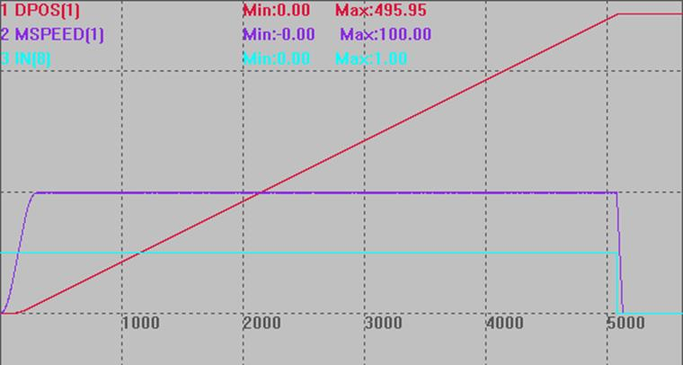

|
类型 |
轴参数 |
|
描述 |
轴急停信号输入口的配置，缺省-1，不使用急停信号。
控制器急停信号生效后，会立即停止轴，停止减速度为FASTDEC。 设置了急停输入口后，ZMC控制器缺省为OFF有效，常开信号用INVERT_IN反转电平；ECI控制器缺省为ON有效，常闭信号用INVERT_IN反转电平。 |
|
语法 |
VAR1 = AXISEMG_IN，AXISEMG_IN = expression VAR1 = AXISEMG_IN (axisnum)，AXISEMG_IN(axisnum)= expression |
|
适用控制器 |
通用，4系列及以上最新固件。 |
|
例子 |
BASE(1) DPOS=0 UNITS=1000 SPEED=100 '速度设为100 ACCEL=500 DECEL=500 '减速度500 FASTDEC=2000 '快减减速度2000 TRIGGER '自动触发示波器 ATYPE(1)=1 AXISEMG_IN(1) = 8 '输入口8设置为轴1的急停信号 INVERT_IN(8,ON) '信号反转 MOVE(1000) AXIS(1)
急停信号生效，轴1急停。  |
|
相关指令 |